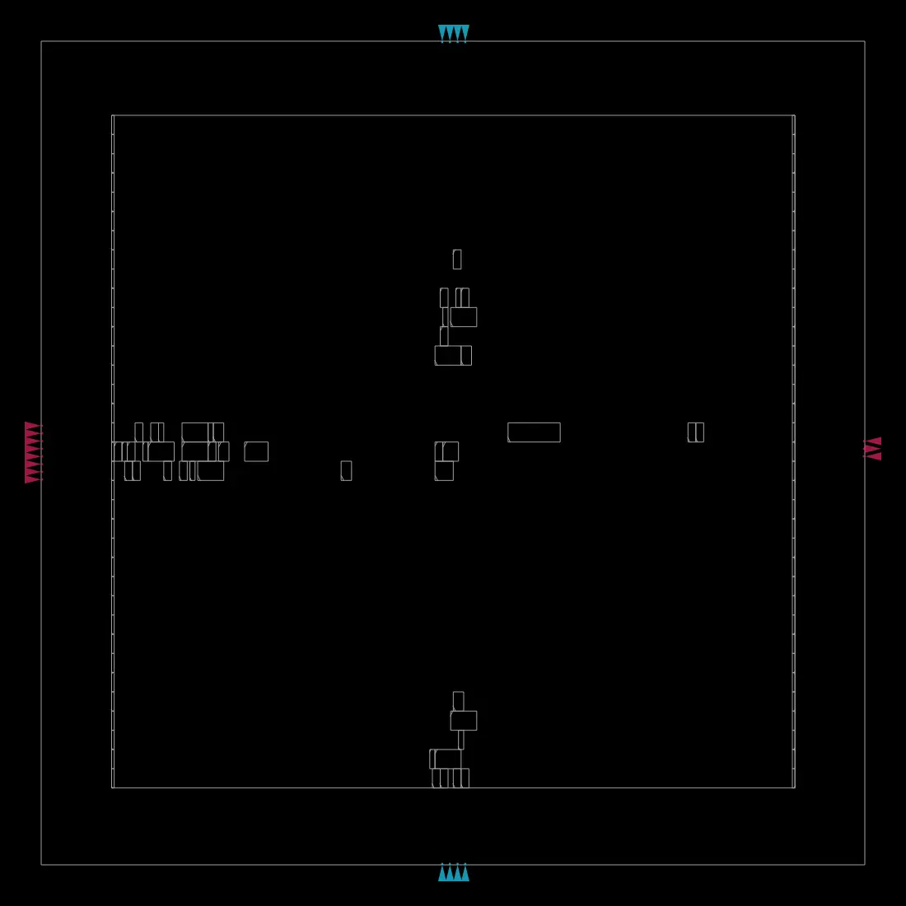
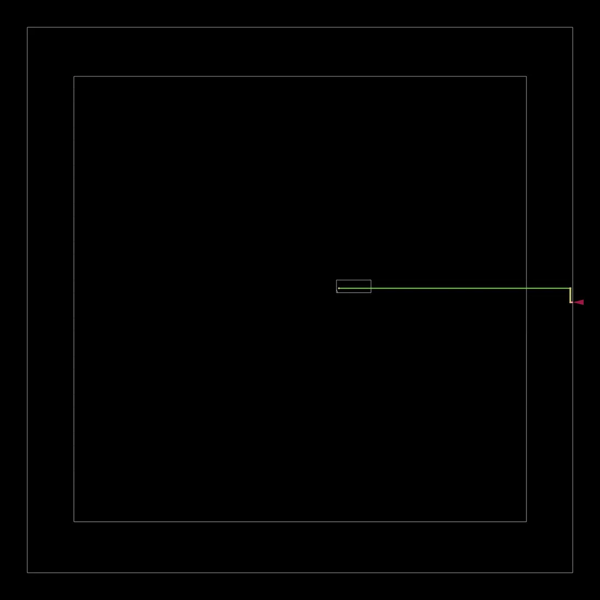
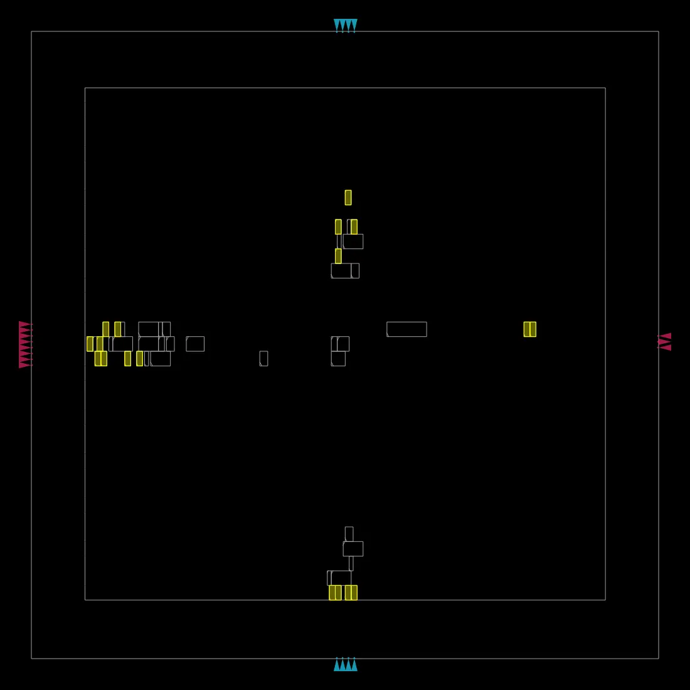
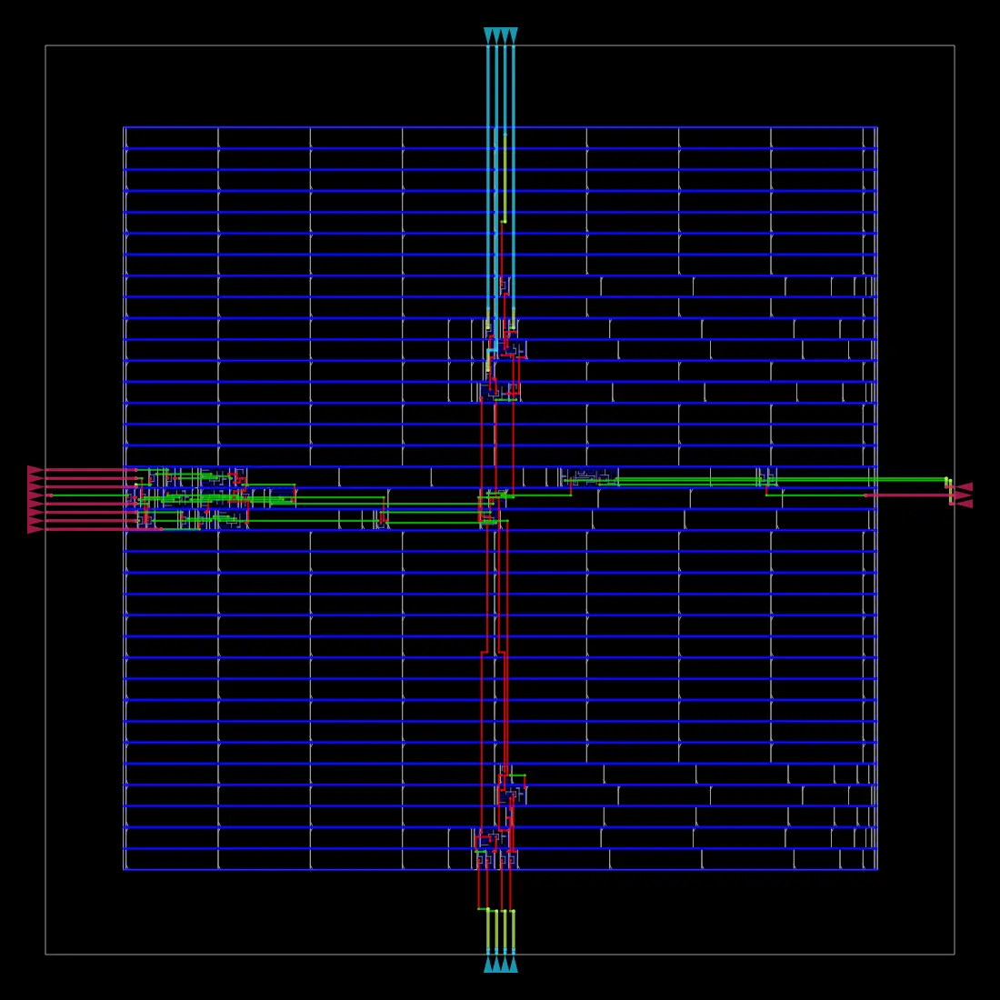
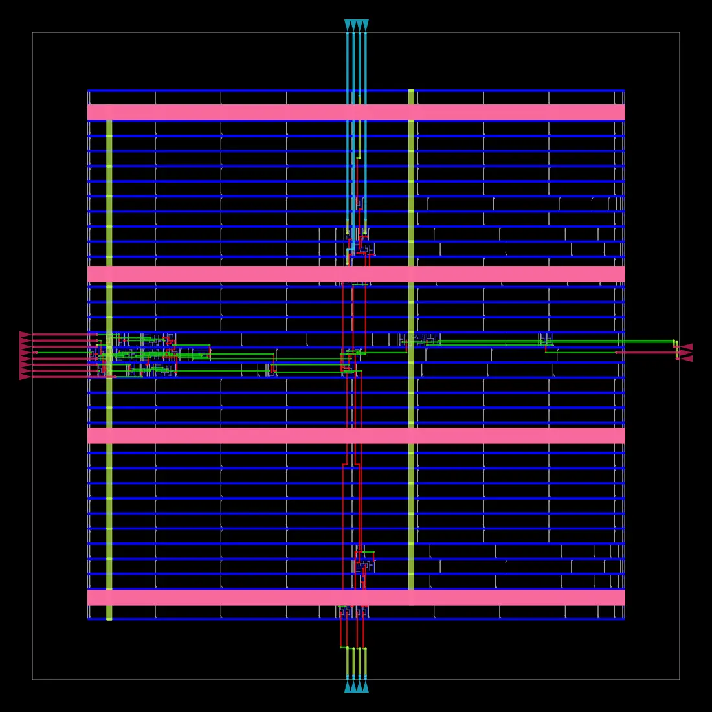
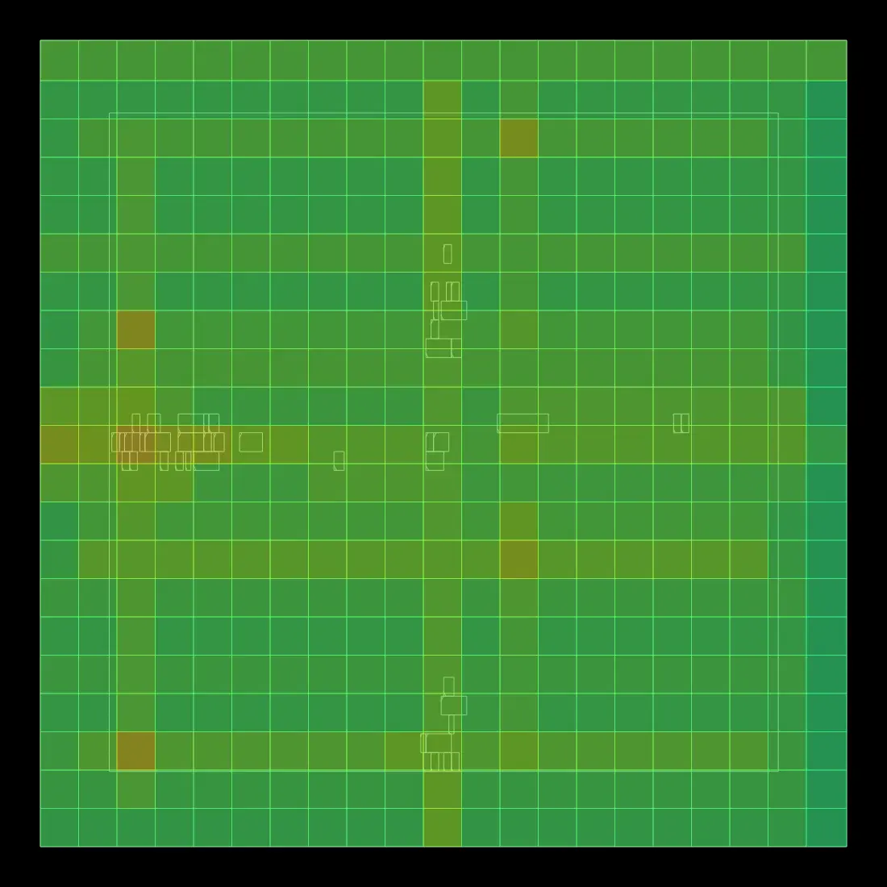
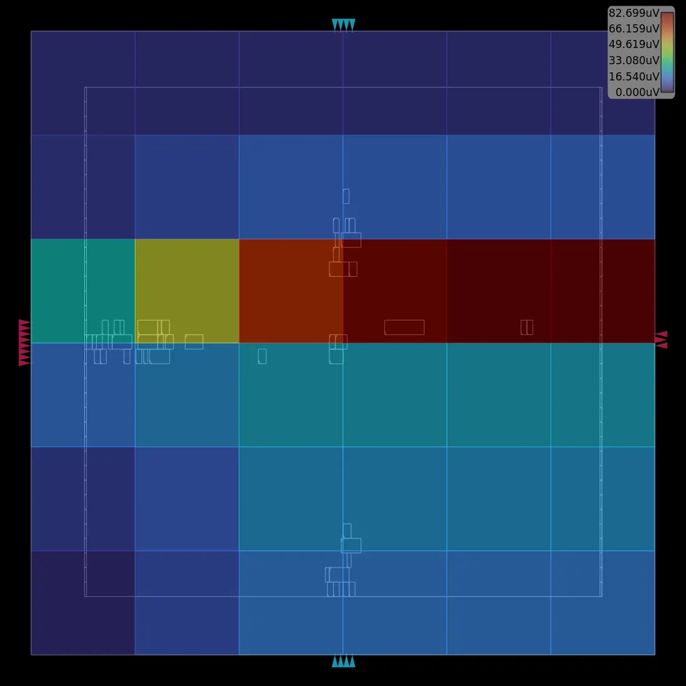

0. 實際完成結果
Synthesis cells28
Synthesis area44.156 µm²
Final area77 µm²3% utilization
Worst slack+7.73 ns
fmax440.06 MHz
Total power4.96 µW
Final：TNS=0、WNS=0；setup/hold/slew/fanout/cap violation count 均為 0。5_route_drc.rpt 為空檔，表示該報告未列出 route DRC violation。
1. 完整流程圖與產生檔案
RTL + SDC + Config
binarization.v · constraint.sdc · config.mk功能、clock、I/O delay、platform/floorplan↓
Synthesis
1_2_yosys.v · 1_synth.odb/.sdcRTL → Nangate45 standard cells↓
Floorplan / PDN
2_1_floorplan.odb → 2_4_floorplan_pdn.odbdie/core、I/O、tap/endcap、power grid↓
Placement
3_1... → 3_5_place_dp.odbglobal/detailed placement、resizer↓
CTS
4_1_cts.odb · 4_cts.sdcclock tree synthesis↓
Routing
5_1_grt.odb · route.guide · 5_2_route.odbglobal/detailed routing↓
Finish
6_final.gds/.def/.odb/.v/.sdc/.spefGDSII、parasitics、STA、power| 階段 | 產生檔案 | 說明 |
|---|---|---|
| RTL + SDC + Config | binarization.v · constraint.sdc · config.mk | 功能、clock、I/O delay、platform/floorplan |
| Synthesis | 1_2_yosys.v · 1_synth.odb/.sdc | RTL → Nangate45 standard cells |
| Floorplan / PDN | 2_1_floorplan.odb → 2_4_floorplan_pdn.odb | die/core、I/O、tap/endcap、power grid |
| Placement | 3_1... → 3_5_place_dp.odb | global/detailed placement、resizer |
| CTS | 4_1_cts.odb · 4_cts.sdc | clock tree synthesis |
| Routing | 5_1_grt.odb · route.guide · 5_2_route.odb | global/detailed routing |
| Finish | 6_final.gds/.def/.odb/.v/.sdc/.spef | GDSII、parasitics、STA、power |
Final deliverables：6_final.gds 是 GDSII；6_final.def 是 physical geometry；6_final.spef 是寄生 R/C；6_final.v 是 final gate netlist；6_final.sdc 是 timing constraint；6_final.odb 是 OpenROAD database。
2. Windows OSS CAD Suite
路徑：D:\userdata\Downloads\oss-cad-suite-windows-x64-20260914\oss-cad-suite。Windows 端先完成 Yosys 前段驗證；因套件沒有 openroad.exe，physical design 改在 WSL2。
PowerShell
cd "D:\userdata\Downloads\oss-cad-suite-windows-x64-20260914\oss-cad-suite"
Set-ExecutionPolicy -Scope Process -ExecutionPolicy Bypass
. .\environment.ps1
yosys -V前段 mapped GLS 已驗證 65,536 pixels，Mismatch=0，Accuracy=100%。
3. WSL2 + Docker + ORFS 安裝
Windows
wsl --statusWSL：Docker 驗證
docker run hello-worldClone ORFS
cd ~
git clone --recursive https://github.com/The-OpenROAD-Project/OpenROAD-flow-scripts.git
cd OpenROAD-flow-scriptsBuild
./build_openroad.sh --threads 2高平行度 build 曾使 Docker/WSL integration 中斷；改 --threads 2 後成功，builder image：openroad/flow-ubuntu22.04-builder:9ed603。
進入 container
docker run --rm -it \
-u $(id -u):$(id -g) \
-v "$HOME/OpenROAD-flow-scripts/flow:/OpenROAD-flow-scripts/flow" \
openroad/flow-ubuntu22.04-builder:9ed603 \
bashPATH
export PATH=/OpenROAD-flow-scripts/tools/install/OpenROAD/bin:/OpenROAD-flow-scripts/tools/install/yosys/bin:$PATH
cd /OpenROAD-flow-scripts/flow4. 官方 GCD Smoke Test
先執行 ORFS 預設 Nangate45/gcd，完整跑到 6_final.gds。這證明 Docker、OpenROAD、Yosys、KLayout、platform 正常。
Container
cd /OpenROAD-flow-scripts/flow
makeGCD 成功、自訂 design 失敗時，優先查 RTL / SDC / config / floorplan，不要先重裝工具。
5. 編輯 RTL
binarization.v
`timescale 1ns/1ps
module binarization(input wire clk,input wire rst_n,input wire [7:0] pix_in,input wire [7:0] threshold,output reg pix_out);
always @(posedge clk or negedge rst_n) begin
if(!rst_n) pix_out <= 1'b0;
else if(pix_in >= threshold) pix_out <= 1'b1;
else pix_out <= 1'b0;
end
endmodule
6. 編輯 SDC
10 ns clock=100 MHz；I/O delay=20%；async reset false path。
constraint.sdc
current_design binarization
set clk_name clk
set clk_port_name clk
set clk_period 10.0
set clk_io_pct 0.20
set clk_port [get_ports $clk_port_name]
create_clock -name $clk_name -period $clk_period $clk_port
set non_clock_inputs [lsearch -inline -all -not -exact [all_inputs] $clk_port]
set_input_delay [expr $clk_period * $clk_io_pct] -clock $clk_name $non_clock_inputs
set_output_delay [expr $clk_period * $clk_io_pct] -clock $clk_name [all_outputs]
set_false_path -from [get_ports rst_n]
7. 第一次 config 與 PDN-0185
config_initial_failed.mk
export PLATFORM = nangate45
export DESIGN_NAME = binarization
export DESIGN_NICKNAME = binarization
export VERILOG_FILES = $(DESIGN_HOME)/src/$(DESIGN_NICKNAME)/binarization.v
export SDC_FILE = $(DESIGN_HOME)/$(PLATFORM)/$(DESIGN_NICKNAME)/constraint.sdc
export CORE_UTILIZATION = 30
export CORE_ASPECT_RATIO = 1
export CORE_MARGIN = 2
export PLACE_DENSITY = 0.55
export TNS_END_PERCENT = 100
Automatic floorplan 產生約 11.97 µm 寬 core，但 Nangate45 M4 PDN 需要 28.5 µm total strap width + 2.0 µm offset，所以失敗。
實際錯誤
[ERROR PDN-0185] Insufficient width (11.97 um) to add straps on layer metal4
in grid "grid" with total strap width 28.5 um and offset 2.0 um.8. 編輯過程：Explicit Floorplan 修正
nano 貼上不方便，因此用 Windows Notepad 直接編輯 WSL 檔案：
WSL
notepad.exe "$(wslpath -w ~/OpenROAD-flow-scripts/flow/designs/nangate45/binarization/config.mk)"修改後 config.mk
export PLATFORM = nangate45
export DESIGN_NAME = binarization
export DESIGN_NICKNAME = binarization
export VERILOG_FILES = $(DESIGN_HOME)/src/$(DESIGN_NICKNAME)/binarization.v
export SDC_FILE = $(DESIGN_HOME)/$(PLATFORM)/$(DESIGN_NICKNAME)/constraint.sdc
# Explicit floorplan fixes PDN-0185
export DIE_AREA = 0 0 60 60
export CORE_AREA = 5 5 55 55
export PLACE_DENSITY = 0.55
export TNS_END_PERCENT = 100
DIE_AREA=60×60 µm、CORE_AREA=50×50 µm；core 足夠寬後 PDN 可建立。
9. 安裝自訂 design
WSL
cd "/mnt/d/userdata/Downloads/0914/Part4_Windows_OSS_WSL_OpenROAD_Complete/Part4_Windows_OSS_WSL_OpenROAD_Complete/wsl_orfs"
./bin/install_design_into_orfs.sh ~/OpenROAD-flow-scripts檢查
find ~/OpenROAD-flow-scripts/flow/designs/src/binarization -maxdepth 1 -type f -print
find ~/OpenROAD-flow-scripts/flow/designs/nangate45/binarization -maxdepth 1 -type f -print10. 執行完整 OpenROAD Flow
進 container
docker run --rm -it \
-u $(id -u):$(id -g) \
-v "$HOME/OpenROAD-flow-scripts/flow:/OpenROAD-flow-scripts/flow" \
openroad/flow-ubuntu22.04-builder:9ed603 \
bash執行
export PATH=/OpenROAD-flow-scripts/tools/install/OpenROAD/bin:/OpenROAD-flow-scripts/tools/install/yosys/bin:$PATH
cd /OpenROAD-flow-scripts/flow
make DESIGN_CONFIG=./designs/nangate45/binarization/config.mk成功完成 Synthesis → Floorplan/PDN → Placement → CTS → Global/Detailed Routing → Fill → Report → KLayout GDS merge。
11. Synthesis 實際內容
28 cells / 44.156 µm²；其中 DFFR_X1 1 顆，sequential area 5.320 µm² (12.05%)。
synth_stat.txt
21. Printing statistics.
=== binarization ===
+----------------------------Count including submodules.
| +-------------------Area including submodules.
| | +----------Local count, excluding submodules.
| | | +-Local area, excluding submodules.
| | | |
41 - 41 - wires
55 - 55 - wire bits
5 - 5 - public wires
19 - 19 - public wire bits
5 - 5 - ports
19 - 19 - port bits
- - - - memories
- - - - memory bits
- - - - processes
28 44.156 28 44.156 cells
1 1.064 1 1.064 AND2_X1
1 1.862 1 1.862 AND4_X2
3 3.192 3 3.192 AOI21_X1
1 5.32 1 5.32 DFFR_X1
8 21.28 8 21.28 HA_X1
9 4.788 9 4.788 INV_X1
2 1.596 2 1.596 NAND2_X1
1 2.394 1 2.394 NOR4_X2
1 1.064 1 1.064 OAI21_X1
1 1.596 1 1.596 OAI221_X1
Chip area for module '\binarization': 44.156000
of which used for sequential elements: 5.320000 (12.05%)
12. OpenROAD 實際圖片
{kind=link}

standard-cell 最終位置
{kind=link}
clock tree
{kind=link}

clock tree + layout
{kind=link}

resizer 後 cells
{kind=link}

多層金屬 routing
{kind=link}

PDN + cells + routing + I/O
{kind=link}

routing congestion heatmap
{kind=link}

IR-drop heatmap，圖例最大約 82.699 µV

final clock network

STA worst path
13. Final STA / Power
| 項目 | 結果 | 解讀 |
|---|---|---|
| Clock | 10 ns | 100 MHz target |
| TNS/WNS | 0 / 0 | 無 negative timing violation |
| Worst slack | +7.73 ns | timing pass |
| Critical path | 2.2325 ns | final critical path delay |
| Min period / fmax | 2.27 ns / 440.06 MHz | report_clock_min_period |
| Setup/Hold | 0 / 0 | violations |
| Slew/Fanout/Cap | 0 / 0 / 0 | violations |
| Power | 4.96 µW | final estimate |
6_finish.rpt 全文
==========================================================================
finish report_tns
--------------------------------------------------------------------------
tns max 0.00
==========================================================================
finish report_wns
--------------------------------------------------------------------------
wns max 0.00
==========================================================================
finish report_worst_slack
--------------------------------------------------------------------------
worst slack max 7.73
==========================================================================
finish report_clock_min_period
--------------------------------------------------------------------------
clk period_min = 2.27 fmax = 440.06
==========================================================================
finish report_clock_skew
--------------------------------------------------------------------------
Clock clk
No launch/capture paths found.
==========================================================================
finish report_checks -path_delay min
--------------------------------------------------------------------------
Startpoint: pix_in[6] (input port clocked by clk)
Endpoint: pix_out$_DFF_PN0_ (rising edge-triggered flip-flop clocked by clk)
Path Group: clk
Path Type: min
Fanout Cap Slew Delay Time Description
-----------------------------------------------------------------------------
0.00 0.00 clock clk (rise edge)
0.00 0.00 clock network delay (propagated)
2.00 2.00 ^ input external delay
1 2.73 0.00 0.00 2.00 ^ pix_in[6] (in)
pix_in[6] (net)
0.00 0.00 2.00 ^ input7/A (BUF_X1)
1 3.28 0.01 0.02 2.02 ^ input7/Z (BUF_X1)
net7 (net)
0.01 0.00 2.02 ^ _57_/A (HA_X1)
2 3.70 0.01 0.02 2.04 v _57_/S (HA_X1)
_09_ (net)
0.01 0.00 2.04 v _52_/A2 (NAND2_X1)
1 1.71 0.01 0.02 2.06 ^ _52_/ZN (NAND2_X1)
_33_ (net)
0.01 0.00 2.06 ^ _54_/C1 (OAI221_X1)
1 1.50 0.01 0.02 2.07 v _54_/ZN (OAI221_X1)
_00_ (net)
0.01 0.00 2.07 v pix_out$_DFF_PN0_/D (DFFR_X1)
2.07 data arrival time
0.00 0.00 clock clk (rise edge)
0.00 0.00 clock source latency
1 3.94 0.00 0.00 0.00 ^ clk (in)
clk (net)
0.00 0.00 0.00 ^ pix_out$_DFF_PN0_/CK (DFFR_X1)
0.00 0.00 clock reconvergence pessimism
0.00 0.00 library hold time
0.00 data required time
-----------------------------------------------------------------------------
0.00 data required time
-2.07 data arrival time
-----------------------------------------------------------------------------
2.07 slack (MET)
==========================================================================
finish report_checks -path_delay max
--------------------------------------------------------------------------
Startpoint: threshold[7] (input port clocked by clk)
Endpoint: pix_out$_DFF_PN0_ (rising edge-triggered flip-flop clocked by clk)
Path Group: clk
Path Type: max
Fanout Cap Slew Delay Time Description
-----------------------------------------------------------------------------
0.00 0.00 clock clk (rise edge)
0.00 0.00 clock network delay (propagated)
2.00 2.00 v input external delay
1 2.18 0.00 0.00 2.00 v threshold[7] (in)
threshold[7] (net)
0.00 0.00 2.00 v input17/A (BUF_X1)
1 1.73 0.01 0.02 2.02 v input17/Z (BUF_X1)
net17 (net)
0.01 0.00 2.02 v _38_/A (INV_X1)
1 3.52 0.01 0.02 2.04 ^ _38_/ZN (INV_X1)
_13_ (net)
0.01 0.00 2.04 ^ _59_/B (HA_X1)
3 5.96 0.04 0.07 2.10 ^ _59_/S (HA_X1)
_15_ (net)
0.04 0.00 2.11 ^ _50_/A1 (AND4_X2)
1 2.21 0.01 0.06 2.16 ^ _50_/ZN (AND4_X2)
_31_ (net)
0.01 0.00 2.16 ^ _51_/A (OAI21_X1)
1 2.23 0.01 0.02 2.18 v _51_/ZN (OAI21_X1)
_32_ (net)
0.01 0.00 2.18 v _54_/B2 (OAI221_X1)
1 1.57 0.03 0.05 2.23 ^ _54_/ZN (OAI221_X1)
_00_ (net)
0.03 0.00 2.23 ^ pix_out$_DFF_PN0_/D (DFFR_X1)
2.23 data arrival time
10.00 10.00 clock clk (rise edge)
0.00 10.00 clock source latency
1 3.94 0.00 0.00 10.00 ^ clk (in)
clk (net)
0.00 0.00 10.00 ^ pix_out$_DFF_PN0_/CK (DFFR_X1)
0.00 10.00 clock reconvergence pessimism
-0.04 9.96 library setup time
9.96 data required time
-----------------------------------------------------------------------------
9.96 data required time
-2.23 data arrival time
-----------------------------------------------------------------------------
7.73 slack (MET)
==========================================================================
finish report_checks -unconstrained
--------------------------------------------------------------------------
Startpoint: threshold[7] (input port clocked by clk)
Endpoint: pix_out$_DFF_PN0_ (rising edge-triggered flip-flop clocked by clk)
Path Group: clk
Path Type: max
Fanout Cap Slew Delay Time Description
-----------------------------------------------------------------------------
0.00 0.00 clock clk (rise edge)
0.00 0.00 clock network delay (propagated)
2.00 2.00 v input external delay
1 2.18 0.00 0.00 2.00 v threshold[7] (in)
threshold[7] (net)
0.00 0.00 2.00 v input17/A (BUF_X1)
1 1.73 0.01 0.02 2.02 v input17/Z (BUF_X1)
net17 (net)
0.01 0.00 2.02 v _38_/A (INV_X1)
1 3.52 0.01 0.02 2.04 ^ _38_/ZN (INV_X1)
_13_ (net)
0.01 0.00 2.04 ^ _59_/B (HA_X1)
3 5.96 0.04 0.07 2.10 ^ _59_/S (HA_X1)
_15_ (net)
0.04 0.00 2.11 ^ _50_/A1 (AND4_X2)
1 2.21 0.01 0.06 2.16 ^ _50_/ZN (AND4_X2)
_31_ (net)
0.01 0.00 2.16 ^ _51_/A (OAI21_X1)
1 2.23 0.01 0.02 2.18 v _51_/ZN (OAI21_X1)
_32_ (net)
0.01 0.00 2.18 v _54_/B2 (OAI221_X1)
1 1.57 0.03 0.05 2.23 ^ _54_/ZN (OAI221_X1)
_00_ (net)
0.03 0.00 2.23 ^ pix_out$_DFF_PN0_/D (DFFR_X1)
2.23 data arrival time
10.00 10.00 clock clk (rise edge)
0.00 10.00 clock source latency
1 3.94 0.00 0.00 10.00 ^ clk (in)
clk (net)
0.00 0.00 10.00 ^ pix_out$_DFF_PN0_/CK (DFFR_X1)
0.00 10.00 clock reconvergence pessimism
-0.04 9.96 library setup time
9.96 data required time
-----------------------------------------------------------------------------
9.96 data required time
-2.23 data arrival time
-----------------------------------------------------------------------------
7.73 slack (MET)
==========================================================================
finish report_check_types -max_slew -max_cap -max_fanout -violators
--------------------------------------------------------------------------
==========================================================================
finish max_slew_check_slack
--------------------------------------------------------------------------
0.15770065784454346
==========================================================================
finish max_slew_check_limit
--------------------------------------------------------------------------
0.1985349953174591
==========================================================================
finish max_slew_check_slack_limit
--------------------------------------------------------------------------
0.7943
==========================================================================
finish max_fanout_check_slack
--------------------------------------------------------------------------
1.0000000150474662e+30
==========================================================================
finish max_fanout_check_limit
--------------------------------------------------------------------------
1.0000000150474662e+30
==========================================================================
finish max_capacitance_check_slack
--------------------------------------------------------------------------
18.14134407043457
==========================================================================
finish max_capacitance_check_limit
--------------------------------------------------------------------------
20.904499053955078
==========================================================================
finish max_capacitance_check_slack_limit
--------------------------------------------------------------------------
0.8678
==========================================================================
finish max_slew_violation_count
--------------------------------------------------------------------------
max slew violation count 0
==========================================================================
finish max_fanout_violation_count
--------------------------------------------------------------------------
max fanout violation count 0
==========================================================================
finish max_cap_violation_count
--------------------------------------------------------------------------
max cap violation count 0
==========================================================================
finish setup_violation_count
--------------------------------------------------------------------------
setup violation count 0
==========================================================================
finish hold_violation_count
--------------------------------------------------------------------------
hold violation count 0
==========================================================================
finish report_checks -path_delay max reg to reg
--------------------------------------------------------------------------
No paths found.
==========================================================================
finish report_checks -path_delay min reg to reg
--------------------------------------------------------------------------
No paths found.
==========================================================================
finish critical path target clock latency max path
--------------------------------------------------------------------------
0.0002
==========================================================================
finish critical path target clock latency min path
--------------------------------------------------------------------------
0.0002
==========================================================================
finish critical path source clock latency min path
--------------------------------------------------------------------------
0.0000
==========================================================================
finish critical path delay
--------------------------------------------------------------------------
2.2325
==========================================================================
finish critical path slack
--------------------------------------------------------------------------
7.7276
==========================================================================
finish slack div critical path delay
--------------------------------------------------------------------------
346.141097
==========================================================================
finish report_power
--------------------------------------------------------------------------
Group Internal Switching Leakage Total
Power Power Power Power (Watts)
----------------------------------------------------------------
Sequential 6.58e-07 3.04e-08 8.57e-08 7.74e-07 15.6%
Combinational 1.70e-06 1.19e-06 1.30e-06 4.19e-06 84.4%
Clock 0.00e+00 0.00e+00 0.00e+00 0.00e+00 0.0%
Macro 0.00e+00 0.00e+00 0.00e+00 0.00e+00 0.0%
Pad 0.00e+00 0.00e+00 0.00e+00 0.00e+00 0.0%
----------------------------------------------------------------
Total 2.36e-06 1.22e-06 1.39e-06 4.96e-06 100.0%
47.5% 24.5% 27.9%
14. Final Output 說明
| 檔案 | 用途 |
|---|---|
| 6_final.gds | 最終 GDSII layout / KLayout |
| 6_final.def | die/core/cell/routing geometry |
| 6_final.odb | OpenROAD/OpenDB database |
| 6_final.v | post-layout gate netlist |
| 6_final.sdc | STA constraints |
| 6_final.spef | parasitic R/C |
| 6_final_lec.v | logic equivalence |
| route.guide | global routing guide |
15. ZIP 內容
Part4_Windows_OSS_WSL_OpenROAD_Complete_Final/
├── index.html / README.txt
├── windows/code/design.sv
├── wsl_orfs/designs/... RTL + SDC + config
├── wsl_orfs/bin/*.sh
├── images/ # 10 張實際 OpenROAD 圖
├── reports/nangate45/binarization/base/ # 完整 reports
└── results/nangate45/binarization/base/ # 完整 results，含 6_final.gds/def/spef/v/sdc/odb